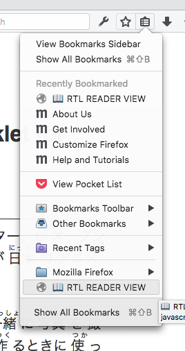

- Bookmark the bookmarklet

- Activate reader view

- Activate bookmarklet

２８ 日 、 東京 の 市ヶ谷 に「 東京 アニメセンター」が オープン しました。 アニメ の 会社 の 団体 と 印刷 会社 が 日本 の アニメ をもっと 知 ってほしいと 考 えてつくりました。
このセンターでは、 アニメ の キャラクター と 一緒 に 写真 を 撮 ることができます。 昔 人気 があった アニメ を 作 るときに 使 った 絵 を 見 ることもできます。 アニメ や 漫画 を 作 ることに 興味 を 持 ってもらうため、 絵 をかくときに 使 う 新 しい 機械 を 使 ってみる コーナー もあります。 アニメ を 作 る 人 を 育 てるため、 プロ の 人 がインターネットで 絵 のかき 方 などを 教 える 講義 も 行 うことにしています。
印刷 会社 の 人 は「 日本 の アニメ は 外国 でも 人気 があります。このセンターから アニメ の 文化 を 伝 えたいです」と 話 しています。
source: NHK Easy News